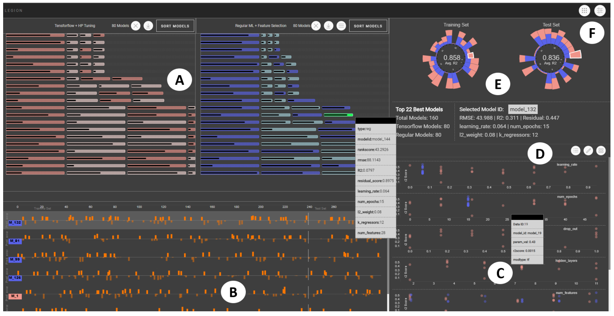

People construct machine learning (ML) models for various use cases in varied domains such as in healthcare, finance,
public-policy, etc. In doing so they aim to improve a models’ performance by adopting various strategies, such as changing input data
(data augmentation), tuning model hyperparameters, performing feature engineering that includes feature extraction, feature
augmentation or feature transformation. However, how would users know which of these model construction strategies to adopt for their
problem? Following any or all of these approaches allows the construction of a gigantic set of models, from which users may select
model(s) suited to their data analytic task. This problem of model selection is non-trivial because in real-world use cases many of the best
performing models (in relation to a specified metric) may appear to serve users’ goal but often exhibits nuances and tradeoffs (e.g, may
weight features differently, varying compute times to train, or may predict relevant data instances differently etc.). This paper aims to solve
the problem of how to construct models and how to select a preferred modeling strategy by allowing users to compare the differences and
similarities between multiple regression models, and then learn not only about the model but also about their data. This learning further
empowers them to select model(s) that more precisely suit their analysis goals. We present LEGION, a visual analytic tool that helps
users to compare and select regression models constructed either by tuning their hyperparameters or by feature engineering. We also
present two use cases on real world datasets validating the utility and effectiveness of our tool.